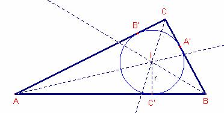
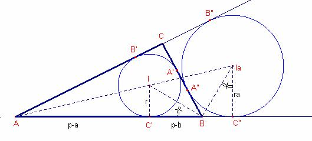
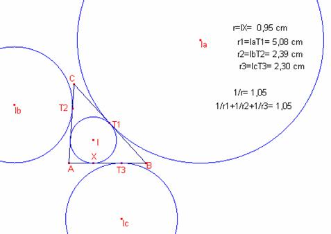

Problema 308
Aplicacions de l’àlgebra a la
geometria
201. La suma dels inversos dels
radis dels cercles exinscrits d’un triangle és igual a l’invers del radi del
cercle inscrit, i l’arrel quadrada del producte dels quatre radis és igual a
l’àrea del triangle.
Severi, F. (1952) : Elementos de geometría II, con 144 figuras, traducción de la segunda edición italiana por el profesor T. Martín Escobar, de la Escuela Industrial de Gijón. Tercera reimpresión. Editorial Labor, Barcelona. Talleres Gráficos Ibero-Americanos S.A. Reproducción offset. (pág 201)
Propietat: Proporció
entre els radis de les circumferències inscrites i exinscrites.
Siga
el triangle  .
.
Siguen
r i  els radis de les
circumferències inscrita i exinscrita, respectivament.
els radis de les
circumferències inscrita i exinscrita, respectivament.
Aleshores,
on p és el semiperímetre del triangle .
Demostració:

Siguen
els punts A’, B’, C’ els punts de tangència de la circumferència inscrita al
triangle  amb els costats.
amb els costats.
 .
.
Aleshores,
 .
.
.
Per
tant .
Anàlogament,
 .
.
Siga
la circumferència exinscrita de centre  i radi
i radi  .
.
Siguen
A”, B”, C” els punts de tangència de la circumferència inscrita al triangle  amb les prolongacions
dels costats.
amb les prolongacions
dels costats.

Calculem
i .
.
Aleshores;

Sumant
les expressions:
 , aleshores, .
, aleshores, .
Per
tant,  .
.
Els
triangle  , són semblants,
aleshores, .
, són semblants,
aleshores, .
Anàlogament,
 , .
, .
Fórmula d’Heró. L’àrea d’un triangle és:
és:
.
O bé: .
Fórmula de l’àrea en funció del radi
de la circumferència inscrita. L’àrea d’un triangle és:
és:
on p és el semiperímetre .

Siga
I l’incentre del triangle  . Siga r el radi de la circumferència inscrita a
. Siga r el radi de la circumferència inscrita a  . Siguen A’, B’, C’, els punts de tangència de la
circumferència inscrita i el triangle
. Siguen A’, B’, C’, els punts de tangència de la
circumferència inscrita i el triangle  .
.
Podem
notar que .
L’àrea
del triangle  és igual a la suma de
les àrees dels triangles
és igual a la suma de
les àrees dels triangles  ,
,  ,
,
.
Nota 1:
Fórmula per a calcular el radi de la circumferència inscrita en funció
dels costats.
.
Nota 2: A
partir de la proporció entre els radis de les circumferències inscrita i
exinscrites tenim les fórmules dels radis de les exinscrites en funció dels
costats:
 ,
,  ,
,
En
qualsevol triangle  la relació dels radis
de la circumferència inscrita, i de les exinscrites és la següent:
la relació dels radis
de la circumferència inscrita, i de les exinscrites és la següent:
 .
.

Demostració
A
partir de la proporció entre els radis de la circumferència inscrita i les
exinscrites obtenim:
,  , , on .
, , on .
.
Dividint
l’expressió per r:
 .
.
Nota: Una altra fórmula de radis: .
Siga
el triangle  .
.
Siguen
r el radi de la circumferència inscrita i ra rb rc
els radis de les circumferències exinscrites.
Aleshores:
L’àrea del triangle  és .
és .
Demostració:
A partir de la proporció entre els radis de les
circumferències inscrita i exinscrites obtenim les fórmules dels radis de les
exinscrites en funció dels costats:
,  ,
,  , on
, on
El
radi de la circumferència inscrita en funció dels costats és:  .
.

 .
.
Aleshores,
.